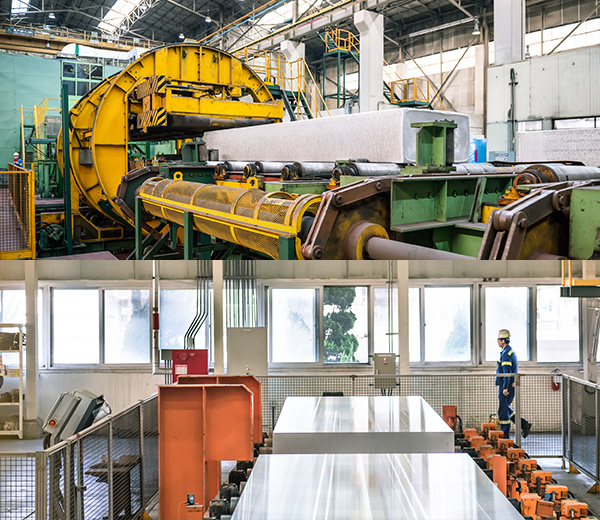
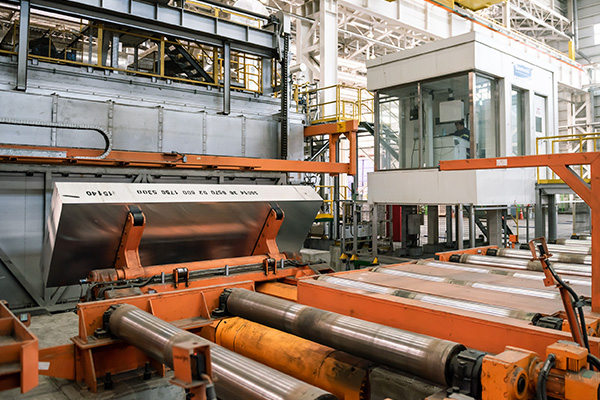
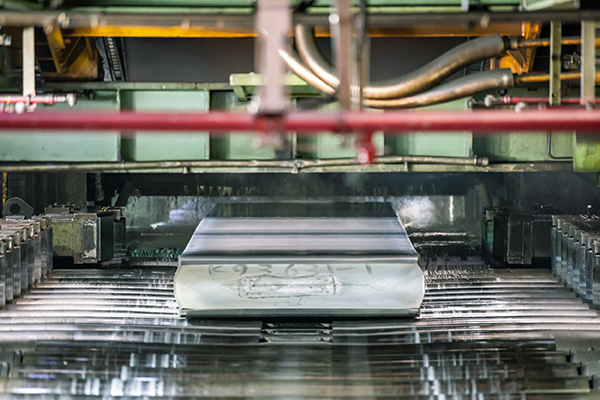

@@include('./include/header.html')
생산공정
MANUFACTURING PROCESS
열연 HOT MILL
- 면삭Scalping
- 균질화 처리Homogenization
- 열간압연Hot Rolling

- 면삭기 Scalping
- 알루미늄은 그 용도 특성상 표면을 중시하는 경우가 많으므로 우수한
표면 품질을 위해서 주조공정에서 생긴 역편석이나 슬라브 표면의
산화물 또는 발한을 제거하기 위하여 슬라브의 한 면 당 5~15mm
정도로 양면을 면삭한다.
면삭기는 반드시 대형 밀링 머신(milling machine)이며, 회전하는
헤드에는 텅스텐 카바이드 절삭 나이프가 장착되어 있다.

- 균열로 Homogenization
- 균질화 처리
- 주괴 내부 응력 완화
- 미세조직을 변경하여 후 공정에 적합한 재질 확보
- 금속을 연화시켜 압연 용이성 향상
- 균질화 처리는 균열로(pusher furnace) 또는 균열 피트(soaking pit)
에서 이루어짐
- 노내에서 주괴는 최고 6000C까지 가열됨(사이클 타임은 12~48 시간
범위임)

- 열간압연기 Hot Rolling
- 금속재료의 경우 고온에서는 변형저항이 적기 때문에 큰 변형이 가능한
특징이 있다. 이러한 성질을 이용하여 알루미늄의 재결정 온도
(약 250 ℃)이상의 온도에서 압연을 행하는 것을 열간 압연이라 한다.
압연 도중에 롤의 과열 및 윤활성을 확보하기 위하여 수용성 압연유가 사용되고 있으며, 열간압연기는 3단 압연기가 사용되고 있고, 최근의 대량 생산형 압연기는 년 10만 TON부터 수십만 TON의 생산능력을
갖추고 있다.
@@include('./include/footer.html')